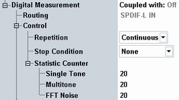

The settings at the top of the "Dig Meas" tab apply to all digital measurements.

Displays the coupling of the measurement to a generator. The measurement can be used standalone ("Off") or it can be coupled to an analog or digital generator.
The coupling is configured within the generator settings, see "Analyzer Coupling".
Remote command:Not applicable
Displays the source of the measured digital audio signal. The source can be a channel of an audio input connector (SPDIF-L IN or SPDIF-R IN) or a speech decoder.
The source is not configurable. It depends on the scenario and on the measurement instance or on the used subinstrument.
Remote command:Not applicable
Defines how often the measurement is repeated if it is not stopped explicitly or by a failed limit check.
- Continuous: The measurement is continued until it is explicitly terminated. The results are periodically updated.
- Single-Shot: The measurement is stopped after one statistics cycle.
Single-shot is preferable if only a single measurement result is required under fixed conditions, which is typical for remote-controlled measurements. Continuous mode is suitable for monitoring the evolution of the measurement results in time and observe how they depend on the measurement configuration, which is typically done in manual control. The reset/preset values therefore differ from each other.
- "None": The measurement is performed according to its "Repetition" mode and "Statistic Count", irrespective of the limit check results.
- "On Limit Failure": The measurement is stopped when one of the limits is exceeded, irrespective of the repetition mode set. If no limit failure occurs, it is performed according to its "Repetition" mode and "Statistic Count". Use this setting for measurements that are intended for checking limits, e.g. production tests.
Defines the number of measurement intervals per measurement cycle (statistics cycle, single-shot measurement). This value is also relevant for continuous measurements, because the averaging procedures depend on the statistic count.
For audio measurements, a single measurement interval is completed when the R&S CMW has acquired a full set of results. The statistic counts for single tone, multitone and FFT noise measurements can be configured individually.
Remote command: